CRM tasks are a special type of tasks that help to organize the work of sales managers with leads, deals, or companies. Any task associated with sales, for example, making a call, holding a meeting, sending an email, or organizing a webinar, can be scheduled and viewed in BRIX. You can monitor all stages of working with an app item and view all completed and active tasks.
All CRM tasks are displayed on the pages of the item they are associated with. Moreover, CRM tasks are shown in the calendar and in the Tasks workspace, in the My tasks section. It is also possible to display CRM tasks separately from other incoming tasks. The Tasks workspace will then have the CRM tasks section that will include all calls, meetings, emails, and webinars assigned to the user.
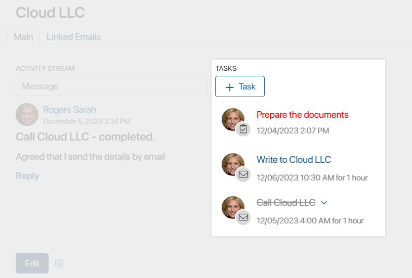
By default, Call, Email, Meeting, and Webinar CRM tasks are available in the system. The system administrator can modify the preconfigured task types and create new ones, as well as make CRM tasks available for items of any app in the system. Read more in the Create a custom CRM task type and CRM task settings articles.
Assignment and execution of standard CRM tasks are by default recorded in the system and displayed in the activity log of the contact. This helps to easily track the interaction of sales managers with customers. This information is also used to determine the readiness of a customer to purchase, i.e., their nurturing stage.
How to assign a CRM task
There are two ways to create a CRM task:
- On the page of the app item for which CRM task creation is available, click the +Task button.
- In Tasks > CRM tasks, click +Task. If the Calendar view is active, double-click on the cell with the task execution start date.
In the window that opens, specify the parameters of the new CRM task:
- When creating a CRM task, select an app in the Tasks workspace, such as Deals, and specify the app item the task is associated with.
- Select the task type from the drop-down:
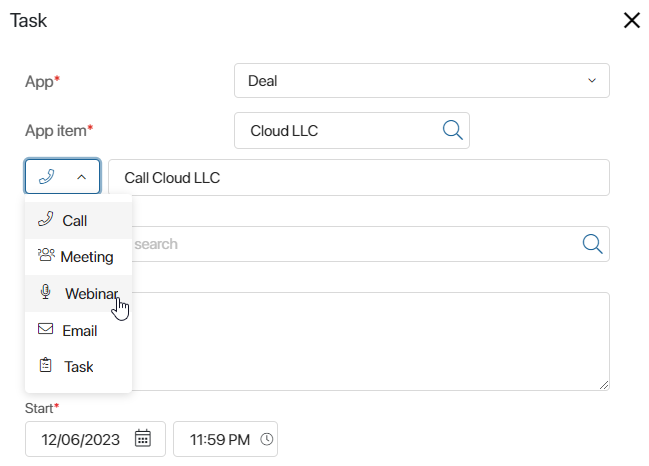
The task’s name is generated automatically. You can edit it.
- Enter information about the task. Please note that the list of available options may be different depending on the task type.
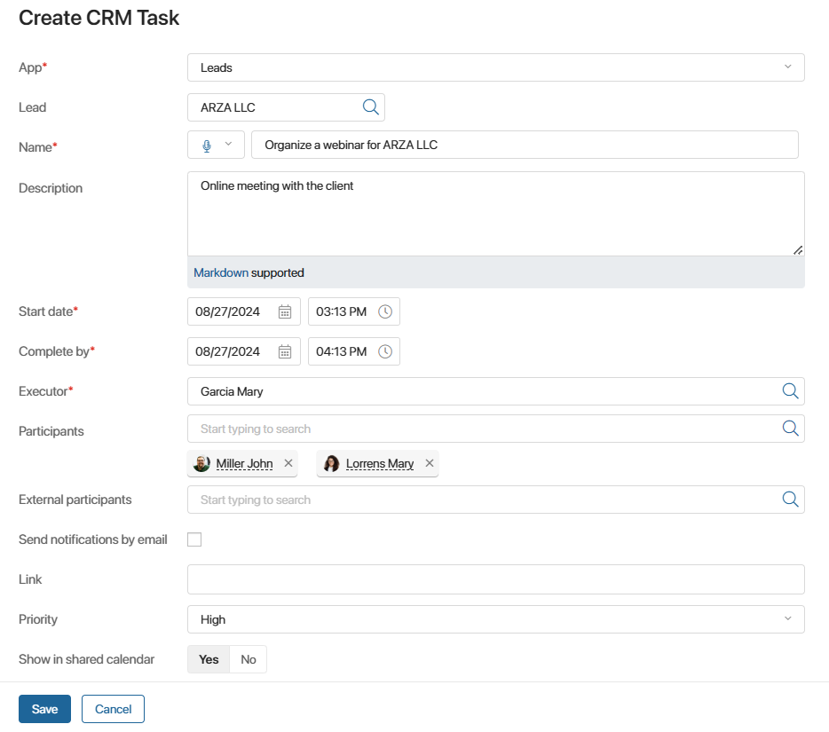
- Description. Add a detailed description of the task to show the goals of the call, meeting, etc.
- Start date*, Complete by*. Set the deadline for the task. After the deadline, the task will become overdue.
- Executor*. By default, the current user is assigned as responsible for the task, but another employee can be specified.
- Priority. Set the urgency of the task. Choose an option from the list or select the Number option to enter any value, for example, from 1 to 100. Employees will be able to find incoming tasks with high priority and work with them first.
- Show in the shared calendar. When this option is disabled, the task will not be displayed in the personal calendars of employees.
- Contact to call/To/External participants. Specify the client from the Contacts app with whom you need to communicate or for whom you are organizing a meeting or a webinar. To quickly find a contact, start typing their name in the field. The drop-down list will display:
- For a lead or deal, contacts linked to the company that is indicated on the lead or deal page. If the company is not specified, the search is performed across all contacts.
- For a company, contacts linked to this company. If there are no related contacts, the search is performed across all items in the Contacts app.
To choose from the full list of contacts and use the search by parameters, click on the magnifying glass icon.
For Meeting and Webinar type tasks, you can also specify the following information:
- Participants. Specify employees who will participate in the task. People you select will receive a notification in the #Activity stream about participating in the webinar or meeting. The assigned task will be displayed in the Assisting section, as well as in the personal calendar of the employee.
- Send notifications by email. Enable this option so that everyone working with the task, including external participants, receives a notification about it by email. The email will contain an .ics file with all the details of the event. Notifications will be sent to the email addresses specified on the contact page in the Work email field and in the user profiles.
- Place. This option is only available for the Meeting type task. Specify the location.
- Link. This option is only available for the Webinar type task. Insert a link related to the webinar, for example, an invitation link.
- After filling out the fields, click Save. If there is an overlap between the task you created and another event from the user’s calendar, you will see a notification.
Where CRM tasks are displayed
App item page
The new task immediately appears on the app item’s page. To make tasks easier to distinguish, calls, webinars, meetings, emails, and other types of CRM tasks have their own icons. Completed tasks are crossed out, and overdue ones are highlighted red.
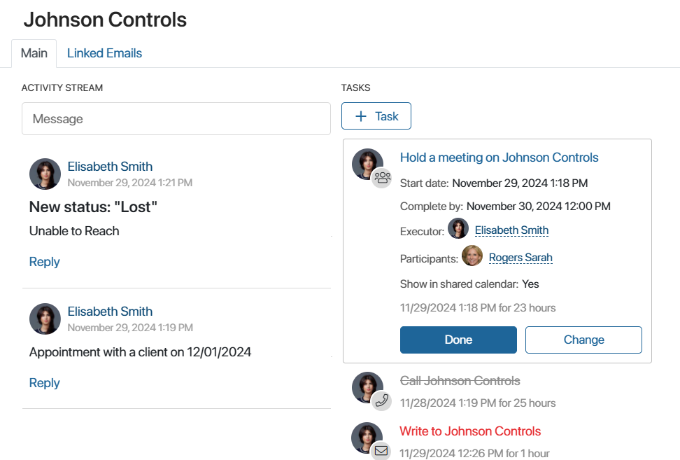
Calendar
If the Show in shared calendar option is enabled when a task is created, it automatically appears in the responsible employee’s personal calendar. Both the employee and their manager can see it there.
The Meeting and Webinar type tasks are also shown in their participants’ calendars. This ensures that all tasks connected with clients can be viewed in one place.
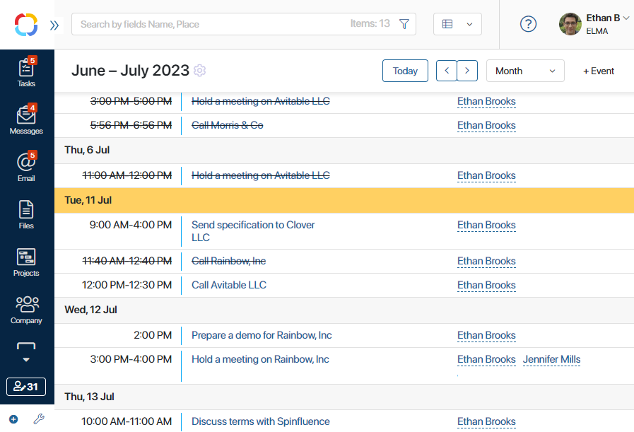
You can select different calendar views and choose the one most convenient for you.
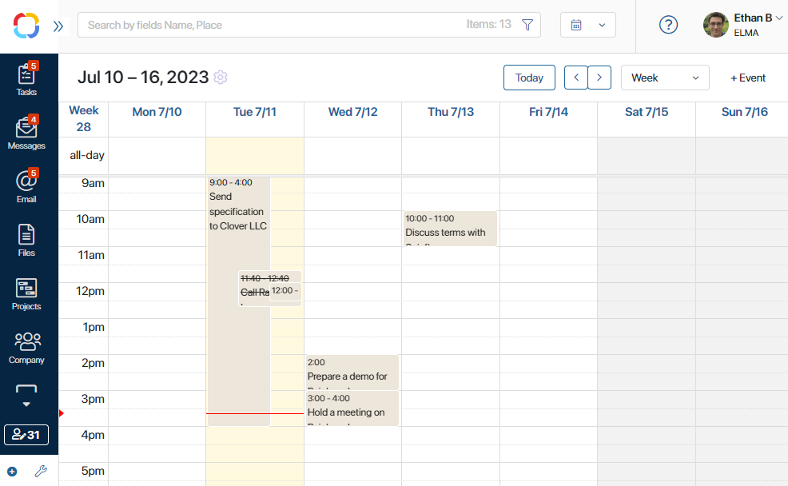
By clicking on a task’s name in the calendar, you will immediately open its page. There you can, for example, mark the task as completed or edit its data.
Tasks workspace
CRM tasks are also displayed in the My tasks list of the user assigned as the responsible employee. Users specified as the tasks’ participants will see the task in the Assisting section.
You can search by CRM tasks in the Tasks workspace. To find all tasks of a specific type assigned to you, open the search by parameters window. In the Associated object field, select Business process, specify the task’s type in the Business process field, and click Search.
You can also configure CRM tasks to be displayed separately from other tasks assigned to you. To do this, go to the user profile settings and enable the Show CRM tasks separately from others option. In the left menu of the Tasks workspace, the CRM tasks section will appear. It includes all tasks specified in the CRM task type settings.
You can choose the view option for CRM Tasks: Kanban board, Table, or Calendar. To do that, select the option in the upper right corner of the task page.
If you select Table, you will see the name, type, and due date of the task as well as the app item the task is associated with.
If you choose Calendar, tasks will be placed in calendar cells, and you will be able to see their start and end dates as well as their name.
On the Kanban board, CRM tasks are divided into columns:
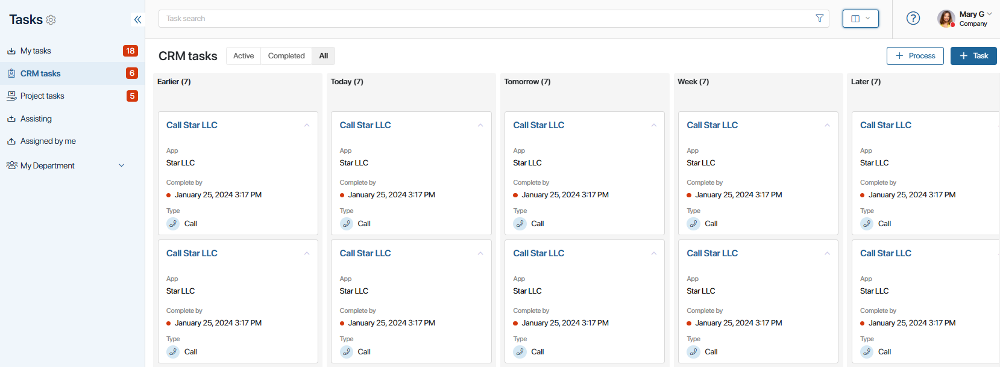
- Earlier. All pending tasks assigned to the user before the current date.
- Today. All tasks set for the current date.
- Tomorrow. Tasks that must be completed the next day after the current date.
- Week. Tasks that must be completed within seven days from the current date. Tasks for Today and Tomorrow are not displayed here.
- Later. Tasks that must be completed within more than eight days from the current date.
In the task columns, tasks are automatically sorted by their start time: tasks with the closest planned completion date will be displayed at the top of the column.
You can reschedule a task by dragging it to another column. Information about the rescheduling is recorded on the task page in the associated activity stream. Please note that it is not possible to move tasks to the Earlier column.
Work with CRM tasks
It is easy to work with CRM tasks directly from the associated item’s page. For each type of task, there is a set of actions available, for example, you can mark a task as completed or edit it. Let’s take a closer look at the CRM tasks available by default. The system administrator can change them, as well as add new task types in the CRM task types settings.
Сall
There are four buttons for managing a phone call:
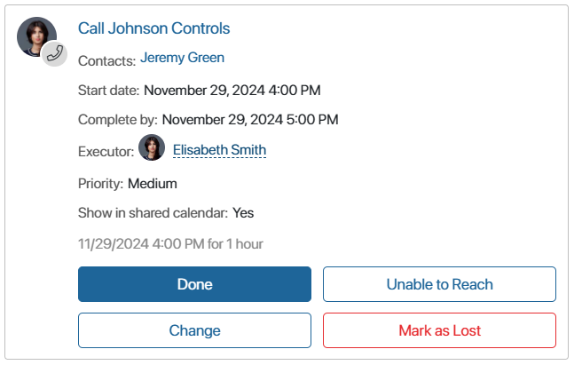
- Done. If the call was successful, click this button to complete the task. Write a comment that will appear in the activity stream of the app item.
- Change. Change the task’s name, reassign it, or reschedule the call. If you reassign the task, the new responsible user will get a notification in their #Activity stream. A comment specifying what changes were made to the task will appear in the app item’s activity stream.
- Unable to Reach. Select the reason why it’s impossible to contact the client. It will appear in the item’s activity stream and the task will be closed. You can create a new task with the same details by specifying Yes in the Create a task for the new period? field and selecting the new date and time. All information from the current task will be copied into the new one.
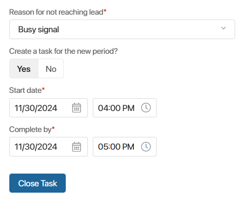
- Mark as Lost. This option is only available for CRM tasks associated with leads and deals. Select the reason why the lead or deal should be marked as lost and leave a comment. The deal status will automatically change to Lost and the lead will be assigned the Unqualified status. In this case, all other CRM tasks scheduled for canceled deals and leads will be completed automatically.
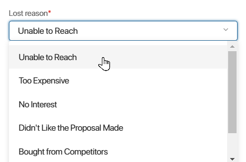
Meeting and webinar
Working with these tasks is similar. They have two buttons: Done and Change.
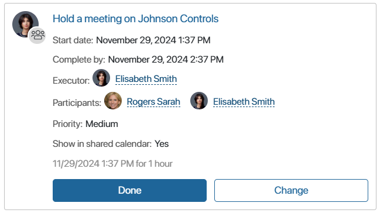
When you edit a Meeting or a Webinar, you can rename, reassign, or reschedule it, as well as edit its participants.
The following actions are available for working with emails:
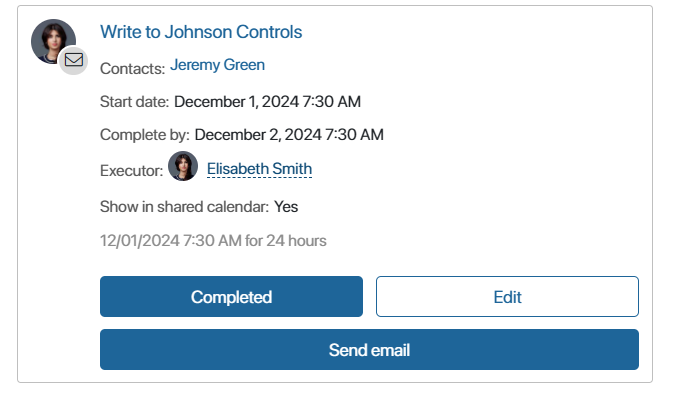
- Completed. Close the task if the email has been successfully sent. Enter a comment that will be saved in the associated activity stream of the app item for which the task is set.
- Edit. Change the details of the task, reassign or reschedule it. When reassigning, the new executor will receive a notification in their #Activity stream. Information about the changes is recorded in the associated activity stream of the app item.
- Send email. Click the button to write an email in the built-in email client. After you send the email, the task is closed automatically. This option is available if the contact to write to is specified in the task’s details, and the current user has connected a personal email account in the Email workspace.
Task
Working with a Task in the CRM workspace is similar to working with regular BRIX tasks. A task page will be created as usual and added to the executor’s task list. However, unlike regular tasks, CRM tasks also appear in the Calendar.
Please note that if instead of a task you are creating a checklist, its items won’t be shown in the calendar because checklists have no executor and merely serve to make planning easier. However, you can edit a checklist item and assign an executor, in this case, it will appear in the executor’s calendar.
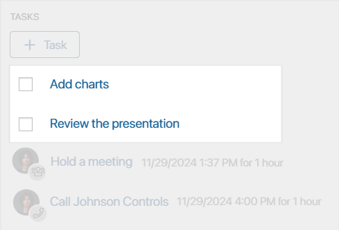
Learn more in the Task lists article.
Found a typo? Select it and press Ctrl+Enter to send us feedback